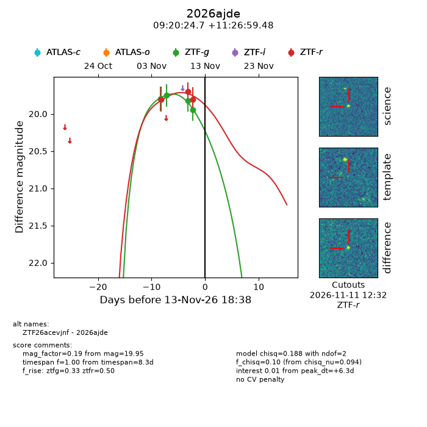
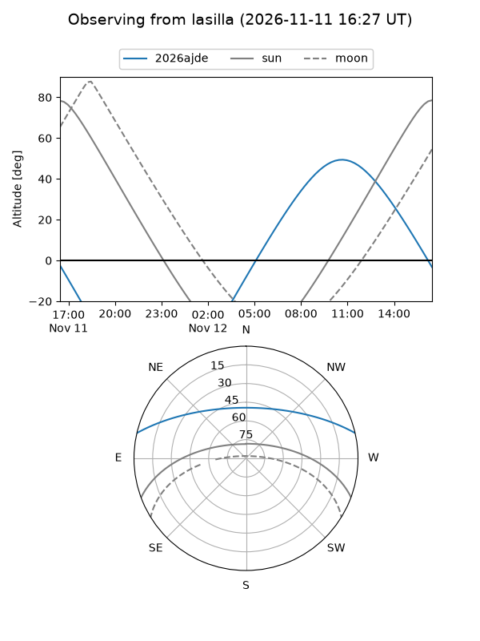
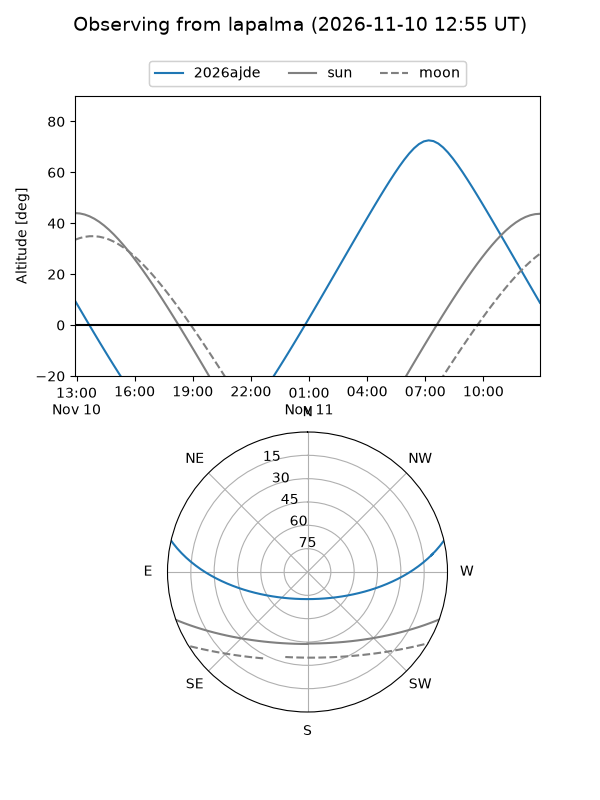
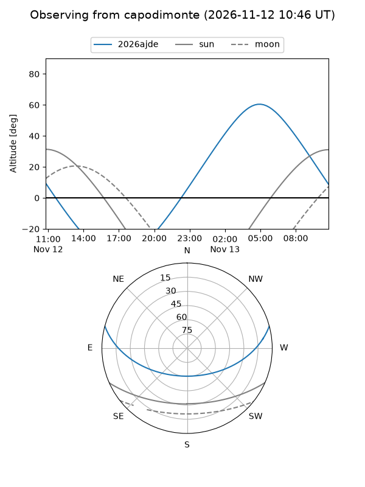
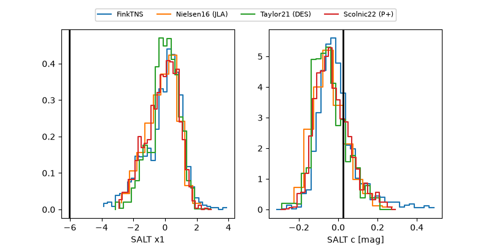

2026ajde
Target 2026ajde at 2026-11-13 18:41
Aliases and brokers:
FINK-ZTF: ztf.fink-portal.org/ZTF26acevjnf
Lasair-ZTF: lasair-ztf.lsst.ac.uk/objects/ZTF26acevjnf
ALeRCE-ZTF: alerce.online/object/ZTF26acevjnf
YSE-PZ: ziggy.ucolick.org/yse/transient_detail/2026ajde
TNS name: wis-tns.org/object/2026ajde
Direct TNS query: direct search
alt names
ZTF26acevjnf (ztf,fink_ztf)
2026ajde (tns,yse)
Coordinates:
equatorial (ra, dec) = 140.1028,+11.44985
equatorial (HMS+DMS) = 09:20:24.67,+11:26:59.48
galactic (l, b) = (219.7870,+38.20084)
Flags:
peak dt: +6.3
Photometry:
last ztfg=19.95, ztfr=19.81
4 ztfg, 3 ztfr detections
Lightcurve

Visibility



Additional plots
